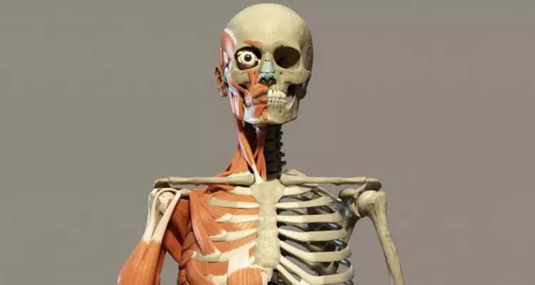

A anatomia humana é o estudo da estrutura do corpo humano. Está dividida em vários ramos, incluindo anatomia macroscópica (também conhecida como anatomia topográfica ou descritiva), anatomia microscópica (também conhecida como anatomia histológica), anatomia patológica (estudo da doença), anatomia cirúrgica (estudo da anatomia em relação aos técnicas) e anatomia radiológica (o estudo da anatomia através de imagens médicas).
A anatomia humana lida com a estrutura do corpo humano, incluindo órgãos, tecidos, ossos, músculos, nervos, vasos sanguíneos e outros componentes. É usado em muitas áreas da medicina, como cirurgia, radiologia, medicina esportiva e terapia ocupacional. Também é importante na pesquisa médica e no desenvolvimento de novas técnicas e tratamentos médicos.
O estudo da anatomia humana requer conhecimento de biologia, química e física, bem como uma compreensão completa da estrutura e função do corpo humano. Estudantes de medicina, enfermagem e outras disciplinas médicas passam anos estudando anatomia humana para obter uma compreensão detalhada do corpo humano e seus processos.
Existem muitas outras partes do corpo humano, incluindo órgãos internos, sistemas e estruturas como o coração, pulmões, cérebro, músculos, ossos, pele e muito mais. Cada parte do corpo humano desempenha um papel importante no funcionamento geral do corpo.
Plano sagital:divide o corpo humano em duas partes, direita e esquerda, sendo assim um plano longitudinal. É usado para descrever a localização de estruturas ao longo da linha média do corpo.
Plano frontal (ou coronal): divide o corpo em metades anterior (frente) e posterior (costas), permitindo a visualização das estruturas laterais. É comum utilizar os termos "ventral" e "dorsal" para se referir às partes da frente e de trás do corpo, respectivamente.
Plano transversal (ou axial): divide o corpo em metades superior e inferior, permitindo a visualização das estruturas em relação à profundidade. É comum utilizar os termos "superior" e "inferior" para se referir às partes de cima e de baixo do corpo, respectivamente.
Plano oblíquo: é um plano que corta o corpo humano em um ângulo oblíquo (ou seja, não paralelo a nenhum dos três planos principais). É usado principalmente em radiologia para visualizar estruturas que não se encontram em nenhum dos planos principais.
Plano de Frankfort: é um plano que passa pelas margens inferiores das órbitas oculares e pelo bordo superior dos condilos mandibulares. É usado para determinar a posição da cabeça em relação à coluna cervical.
Plano de Camper: é um plano que passa pelo ponto mais baixo da borda inferior das órbitas oculares e pelo trago da orelha. É usado para determinar a posição da cabeça em relação à coluna cervical e para posicionar os pacientes para a cirurgia maxilofacial.
Flexão: ocorre quando há uma diminuição do ângulo entre duas partes do corpo. Por exemplo, flexionar o braço ao trazer a mão em direção ao ombro.
Extensão: ocorre quando há um aumento do ângulo entre duas partes do corpo. Por exemplo, estender a perna ao endireitá-la.
Abdução: ocorre quando uma parte do corpo é movida para longe da linha média do corpo. Por exemplo, levantar o braço para o lado.
Adução: ocorre quando uma parte do corpo é movida em direção à linha média do corpo. Por exemplo, abaixar o braço após levantá-lo para o lado.
Rotação: ocorre quando uma parte do corpo é girada em torno do seu eixo longitudinal. Por exemplo, girar a cabeça para olhar para um lado.
Circundução: ocorre quando uma parte do corpo se movimenta em um círculo completo. Por exemplo, movimentar o braço em um movimento circular.
Inversão: ocorre quando o pé é movido em direção ao centro do corpo. Por exemplo, inclinar o tornozelo para dentro.
Eversão: ocorre quando o pé é movido para fora do corpo. Por exemplo, inclinar o tornozelo para fora.
Pronação: ocorre quando a palma da mão é voltada para baixo. Por exemplo, apoiar as mãos no chão em posição de prancha.
Supinação: ocorre quando a palma da mão é voltada para cima. Por exemplo, levantar as mãos para o teto.